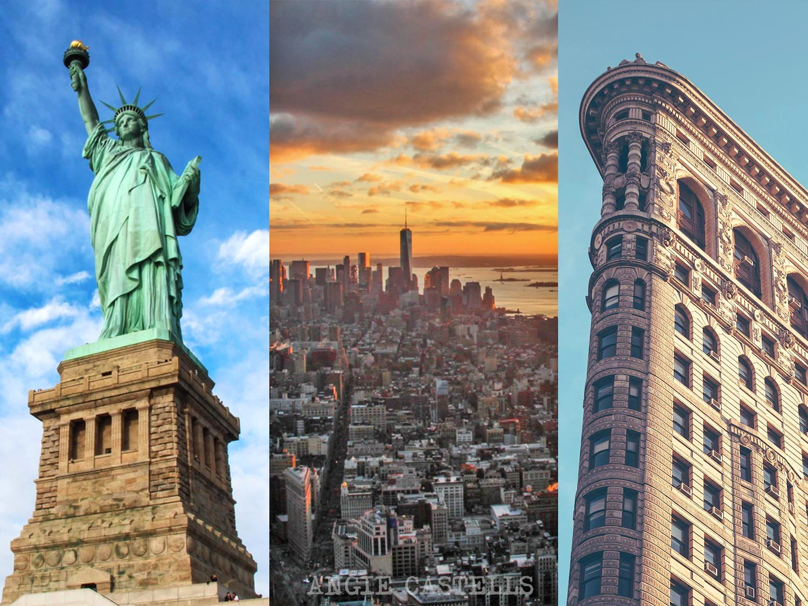
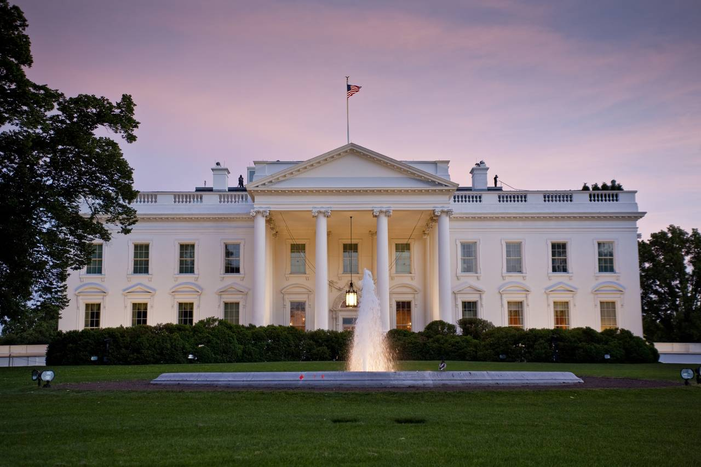

Mapa
Estados Unidos de America
oficialmente Estados Unidos de América (United States of America, cuya sigla oficial en inglés es USA y su contraparte en español es EUA),10 es un país soberano constituido en república federal constitucional compuesta por cincuenta estados y un distrito federal. La mayor parte del país se ubica en el medio de América del Norte —donde se encuentran sus cuarenta y ocho estados contiguos y Washington D. C., el distrito federal—, entre los océanos Pacífico y Atlántico, limita con Canadá al norte y con México al sur. El estado de Alaska está en el noroeste del continente, limita con Canadá al este, separado de Rusia al oeste por el estrecho de Bering.
Con 9,83 millones de km²,4 y con más de 325 millones de habitantes, el país es el cuarto mayor en área total, el quinto mayor en área contigua y el tercero en población. Es una de las naciones con más diversidad de etnias y multicultura, producto de la inmigración a gran escala.11 Es la economía nacional más grande del mundo en términos nominales, con un PIB estimado en 15,7 billones de dólares (una cuarta parte del PIB global nominal) y una quinta parte del PIB global en paridad de poder adquisitivo

Los pueblos amerindios llevan miles de años habitando lo que es el territorio continental de los Estados Unidos. Esta población amerindia fue reducida por las enfermedades y la guerra después del primer contacto con los europeos. Estados Unidos fue fundado por trece colonias británicas, a lo largo de la costa atlántica. El 4 de julio de 1776, emitieron la Declaración de Independencia, que proclamó su derecho a la libre autodeterminación y el establecimiento de una unión cooperativa. Los estados rebeldes derrotaron al Imperio británico en la guerra de independencia, la primera guerra colonial de independencia exitosa.13 La Constitución de los Estados Unidos fue adoptada el 17 de septiembre de 1787; su ratificación al año siguiente hizo a los estados parte de una sola república con un gobierno central fuerte. La Carta de Derechos, que comprende diez enmiendas constitucionales que garantizan muchos derechos civiles fundamentales y las libertades, fue ratificada en 1791
